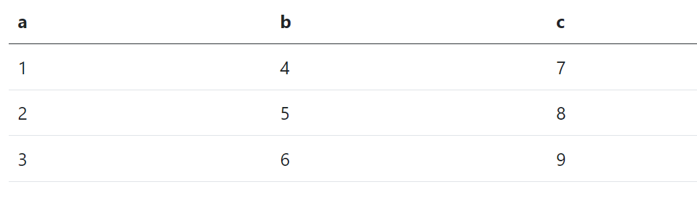

Instructions
You have 30 minutes to complete this quiz. Set a timer, as it is self timed!
The quiz covers tidy data, imports, and EDA.
As always make sure your code is well organized in proper formatting and using tidyverse functions.
Once you are finished:
- Check Submissions to make sure every question/exercise has been submitted.
- Click the ‘Lock Exam’ button. You will not be able to make any changes once this is clicked.
- Once the exam is locked you will be able to click on the ‘Download Exam’ button.
- Submit the completed html to Canvas.
Question 1
Question 2
The first few rows of the dataset are shown below:
Question 3
Question 4
Question 5
Codebook:
Tip: Watch your time! It’s easy to go down the rabbit hole in an EDA. Focus your analysis and know when to stop.
Submit
Once you are finished:
Click Check Submissions to make sure all questions and exercises are submitted – Un-submitted questions will receive a 0.
Once all questions/exercises are submitted click the Lock Exam button. Once you click this you will not be able to make any changes to your exam!
Once the lock is pressed a Download Exam option will become available,
Download and Check your HTML!
You have 3 attempts on this proficiency quiz. Submit the quiz you want to be graded to Canvas. The grader will ONLY be grading one quiz per student. You can submit multiple attempts but the grader will only grade your LAST submission.
Retry
The retry button is available 24 hours after you lock the quiz.
You have 3 attempts on this quiz.
Once you click retry, your quiz will be erased and a new set of questions will be generated. Make sure you downloaded your quiz and check that everything is correct prior to clicking the retry button. Once you click retry there will be no way to retrieve your prior attempt.